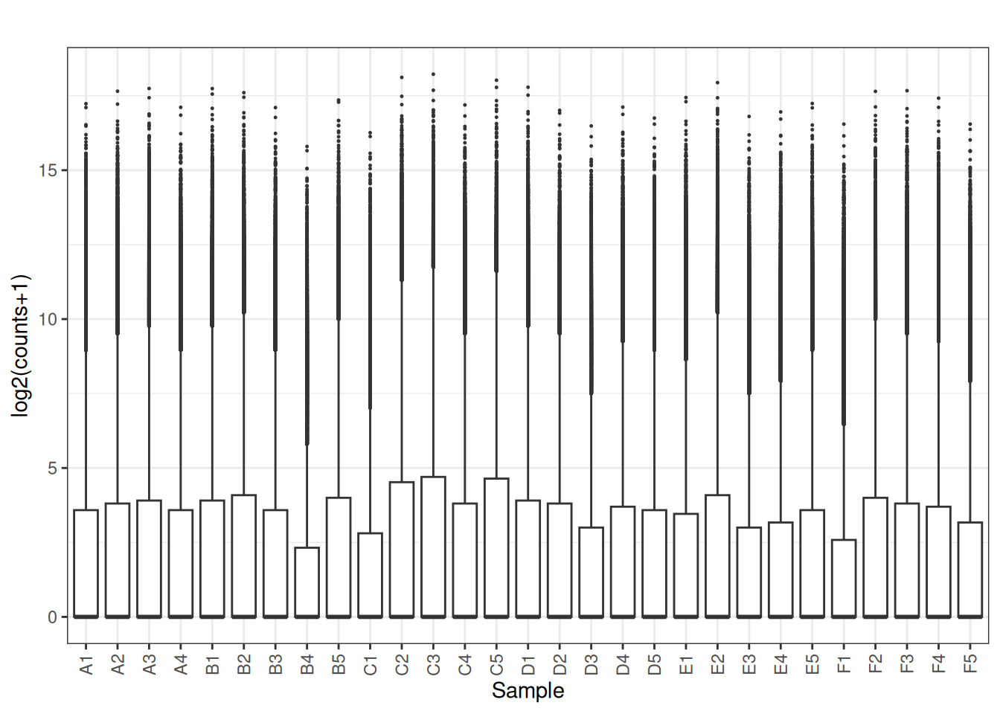
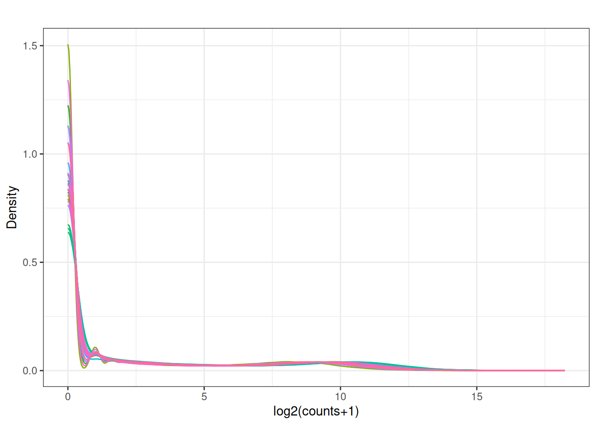

Chapter 3 Visualizing distributions
Before choosing a normalization method, inspect data distributions.
3.1 load Some data
## Loading required package: Biobase## Loading required package: BiocGenerics## Loading required package: generics##
## Attaching package: 'generics'## The following objects are masked from 'package:base':
##
## as.difftime, as.factor, as.ordered, intersect, is.element, setdiff,
## setequal, union##
## Attaching package: 'BiocGenerics'## The following objects are masked from 'package:stats':
##
## IQR, mad, sd, var, xtabs## The following objects are masked from 'package:base':
##
## anyDuplicated, aperm, append, as.data.frame, basename, cbind,
## colnames, dirname, do.call, duplicated, eval, evalq, Filter, Find,
## get, grep, grepl, is.unsorted, lapply, Map, mapply, match, mget,
## order, paste, pmax, pmax.int, pmin, pmin.int, Position, rank,
## rbind, Reduce, rownames, sapply, saveRDS, table, tapply, unique,
## unsplit, which.max, which.min## Welcome to Bioconductor
##
## Vignettes contain introductory material; view with
## 'browseVignettes()'. To cite Bioconductor, see
## 'citation("Biobase")', and for packages 'citation("pkgname")'.## Setting options('download.file.method.GEOquery'='auto')## Setting options('GEOquery.inmemory.gpl'=FALSE)##
## Attaching package: 'dplyr'## The following object is masked from 'package:Biobase':
##
## combine## The following objects are masked from 'package:BiocGenerics':
##
## combine, intersect, setdiff, setequal, union## The following object is masked from 'package:generics':
##
## explain## The following objects are masked from 'package:stats':
##
## filter, lag## The following objects are masked from 'package:base':
##
## intersect, setdiff, setequal, union## Loading required package: tidyverse## ── Attaching core tidyverse packages ──────────────────────── tidyverse 2.0.0 ──
## ✔ forcats 1.0.1 ✔ readr 2.1.6
## ✔ ggplot2 4.0.2 ✔ stringr 1.6.0
## ✔ lubridate 1.9.5 ✔ tidyr 1.3.2
## ✔ purrr 1.2.1
## ── Conflicts ────────────────────────────────────────── tidyverse_conflicts() ──
## ✖ dplyr::combine() masks Biobase::combine(), BiocGenerics::combine()
## ✖ dplyr::filter() masks stats::filter()
## ✖ dplyr::lag() masks stats::lag()
## ✖ ggplot2::Position() masks BiocGenerics::Position(), base::Position()
## ℹ Use the conflicted package (<http://conflicted.r-lib.org/>) to force all conflicts to become errors## Using locally cached version of supplementary file(s) GSE119732 found here:
## data/GSE119732/GSE119732_count_table_RNA_seq.txt.gzpath <- file.path("data", gse)
files <- list.files(path, pattern = "\\.txt.gz$|\\.tsv.gz$|\\.csv.gz$",
full.names = TRUE, recursive = TRUE)Raw table preview
library(readr)
safe_read <- function(file) {
# First attempt: read as TSV
df <- tryCatch(
readr::read_tsv(file, show_col_types = FALSE),
error = function(e) NULL # catch fatal errors
)
# If read_tsv failed entirely:
if (is.null(df)) {
message("TSV read failed — reading as space-delimited file instead.")
return(readr::read_table(file, show_col_types = FALSE))
}
# If read_tsv returned but with parsing issues:
probs <- problems(df)
if (nrow(probs) > 0) {
message("Parsing issues detected in TSV — reading as space-delimited file instead.")
return(readr::read_table(file, show_col_types = FALSE))
}
# If everything was fine:
return(df)
}
x <- safe_read(files[1])
kable_head(x[, 1:min(6, ncol(x))], 5, paste(gse,": raw table preview"))| gene_id | A1 | A2 | A3 | A4 | B1 |
|---|---|---|---|---|---|
| ENSG00000223972.5 | 0 | 0 | 0 | 0 | 0 |
| ENSG00000227232.5 | 79 | 119 | 84 | 50 | 80 |
| ENSG00000278267.1 | 17 | 10 | 22 | 19 | 19 |
| ENSG00000243485.4 | 0 | 0 | 0 | 0 | 0 |
| ENSG00000237613.2 | 0 | 0 | 0 | 0 | 0 |
3.2 Boxplots
library(tidyverse)
# suppose 'mat' is a gene x sample matrix (numeric)
plot_box <- function(mat, main = "", ylab = "log2(counts+1)") {
df <- as.data.frame(mat)
df_long <- df |>
mutate(gene = rownames(df)) |>
pivot_longer(-gene, names_to = "sample", values_to = "value") |>
mutate(value = log2(value + 1))
ggplot(df_long, aes(x = sample, y = value)) +
geom_boxplot(outlier.size = 0.2) +
theme_bw() +
theme(axis.text.x = element_text(angle = 90, vjust = 0.5, hjust = 1)) +
labs(title = main, x = "Sample", y = ylab)
}
plot_box(x[,2:ncol(x)])
3.3 Density plots
plot_density <- function(mat, main = "") {
df <- as.data.frame(mat)
df_long <- df |>
mutate(gene = rownames(df)) |>
pivot_longer(-gene, names_to = "sample", values_to = "value") |>
mutate(value = log2(value + 1))
ggplot(df_long, aes(x = value, colour = sample)) +
geom_density() +
theme_bw() +
labs(title = main, x = "log2(counts+1)", y = "Density") +
guides(colour = "none")
}
plot_density(x[,2:ncol(x)])